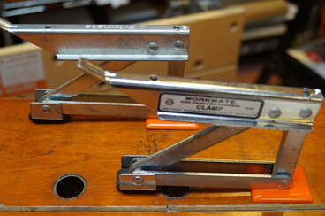

The Gripmate 79-011 was one of the four original accessories that Black & Decker developed for the Workmate. It was introduced in 1977 at $4.99 apiece (increased to $5.99 by mid-1979). It is a hold-down clamp, performing the same function as a holdfast in traditional woodworking, but with a pivot-and-lever mechanism that eliminates the need to bash it with a mallet. Early Black & Decker literature described it as follows:
"Fits into Workmate, clamps parts for gluing and holds items for sawing, drilling, sanding, routing on a horizontal surface. Adjustable up to 3-3/4". Rotates full 360 degrees. Has up to 100 lbs. clamping force. Non-marring." (Note: the instruction manual claims it clamps up to 3-3/8" with 150 lbs. force.)
The Gripmates were made in Canada, and they were originally sold singly as the 79-011. The name "Gripmate" and the B&D hexagon logo were engraved in the top metal surface of the clamp.
Workmate 79-001 Accessories
Gripmate 79-011 (later 79-016)

To use a Gripmate requires inserting a plastic adaptor bushing into one of the holes in the Workmate jaws. The adaptor bushing has a rectangular hole into which the post of the Gripmate fits. The original manual recommends that you "use the centre double-thickness portion of the Workmate vise jaws" and "avoid using the extreme end holes". The need for the bushing has been a bit problematic, because many owners found it difficult to keep the Gripmate and the bushing together when they were not in use on the Workmate. As a result, used Gripmates often show up for sale without the bushing, which makes them useless unless you can fabricate a substitute.
The original Gripmate was supplied with two different sizes of the adaptor bushings. The 3/4" black one for the Workmate 79-001 Type 1 was embossed ".75" and "3" on its bottom surface. The 20mm orange one for all other Workmates was embossed "20 mm" and "7" on its bottom surface. Both bushings have "GRIPMATE" and "Black & Decker" embossed on their top surface.
After a very short time, they dropped the black 3/4" adapter bushing as a standard part of the 79-011, changing the instruction manual to advise owners of the Type 1 Workmate to contact their dealer for the right part.
The original bushings had a simple straight cylindrical post. This was soon modified to add tabs at the bottom of the post to lock it into the Workmate jaw more securely. "20 mm" was embossed on one side of the post, and "4" on the other side. The original straight-sided bushings are quite rare today.
The vertical post on the original Gripmate was 9" tall, but it was soon shortened to 8-1/4". The Gripmates with the tall post are also pretty rare.
The original Gripmate was supplied with two different sizes of the adaptor bushings. The 3/4" black one for the Workmate 79-001 Type 1 was embossed ".75" and "3" on its bottom surface. The 20mm orange one for all other Workmates was embossed "20 mm" and "7" on its bottom surface. Both bushings have "GRIPMATE" and "Black & Decker" embossed on their top surface.
After a very short time, they dropped the black 3/4" adapter bushing as a standard part of the 79-011, changing the instruction manual to advise owners of the Type 1 Workmate to contact their dealer for the right part.
The original bushings had a simple straight cylindrical post. This was soon modified to add tabs at the bottom of the post to lock it into the Workmate jaw more securely. "20 mm" was embossed on one side of the post, and "4" on the other side. The original straight-sided bushings are quite rare today.
The vertical post on the original Gripmate was 9" tall, but it was soon shortened to 8-1/4". The Gripmates with the tall post are also pretty rare.


Very shortly after introduction they started selling the Gripmates in pairs, while changing the part number to 79-016. It was still called the Gripmate, they were still made in Canada, and there was no change in the construction of it. The box also changed, with a glossy finish and full color photographs. The single 79-011 continued in their catalog until at least 1982 before being discontinued, but the two-pack 79-016 must have been a bigger seller, so the 79-011 is less common today.
Other changes followed. They eliminated the engraved "Gripmate" and logo from the top metal surface, instead using a glossy black-and-white label applied to the side of the clamp, displaying the model number (now 79-016) on the clamp for the first time. The embossed text was eliminated from the top surface of the plastic adaptor bushings. The bottom corners of the metal post for the Gripmate itself were chamfered to make it go into the bushing a little more smoothly.
In 1979, with the introduction of the Workmate 79-001 Type 7, they dropped the name Gripmate in favor of "Workmate Work Center & Vise Attachment Clamp". The lengthier name replaced "Gripmate" on the glossy black-and-white label applied to the side of the clamp. For some odd reason, the later boxes and manuals still sometimes used the name "Gripmate".
The original single Gripmate 79-011 came in a white cardboard box with black printing and line drawings. The design of the box changed over the years along with the name and model number, as shown by the four variations below, from oldest to newest.
Other changes followed. They eliminated the engraved "Gripmate" and logo from the top metal surface, instead using a glossy black-and-white label applied to the side of the clamp, displaying the model number (now 79-016) on the clamp for the first time. The embossed text was eliminated from the top surface of the plastic adaptor bushings. The bottom corners of the metal post for the Gripmate itself were chamfered to make it go into the bushing a little more smoothly.
In 1979, with the introduction of the Workmate 79-001 Type 7, they dropped the name Gripmate in favor of "Workmate Work Center & Vise Attachment Clamp". The lengthier name replaced "Gripmate" on the glossy black-and-white label applied to the side of the clamp. For some odd reason, the later boxes and manuals still sometimes used the name "Gripmate".
The original single Gripmate 79-011 came in a white cardboard box with black printing and line drawings. The design of the box changed over the years along with the name and model number, as shown by the four variations below, from oldest to newest.